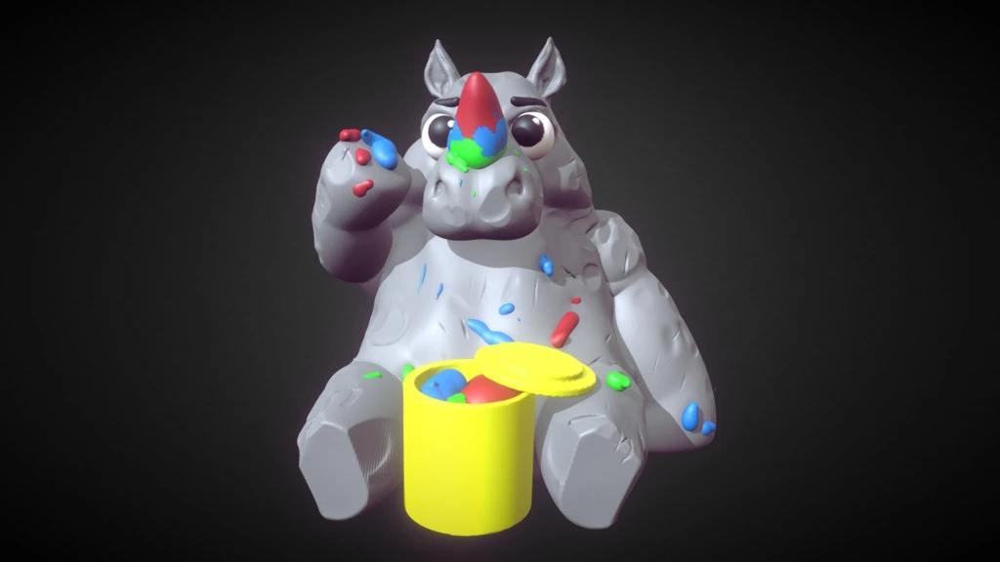
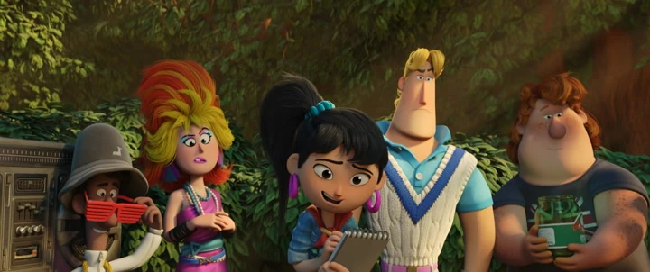
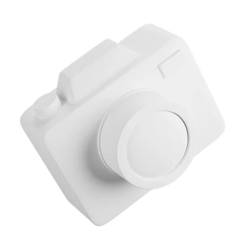
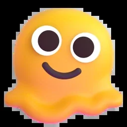

選定理由・代表作
サイは奪われた角の代わりを、自分で粘土で作りました。作者がVR空間で形を彫った、クレイアニメのキャラクターをテーマにした公募の出品作。色の違う小さな塊が、角の手作りらしさを伝えます。
作品・制作の例7件を紹介しています。実作品画像4点、参照・関連画像0点。画像の収集は継続中です。
現代の表現方法・説明用の分類
3D / clay illustration
ふくらんだ顔や、柔らかそうな丸い物が画面に現れます。3Dは奥行きのある形を扱う方法です。その中でも、粘土やおもちゃのような質感に見せる表現を、ここでは取り上げます。
実作品を見る

画像を表示できませんでした。下の出典ページで確認できます。
オスカル・トレホ / 2018年
サイは奪われた角の代わりを、自分で粘土で作りました。作者がVR空間で形を彫った、クレイアニメのキャラクターをテーマにした公募の出品作。色の違う小さな塊が、角の手作りらしさを伝えます。
© Oscar Trejo / Sketchfab。作者公開の3Dモデルのプレビューを縮小しWebP化。
出典で作品・資料を見る ↗実作品を見る

画像を表示できませんでした。下の出典ページで確認できます。
マシュー・ルーン監督、ブレンダー・スタジオ / 2021年
髪を一本ずつ描かず、太い束にしてあります。制作チームは、玩具のような単純な形を得るため、手首や筋肉の細かな起伏を省いたと説明しています。デジタルの粘土彫刻と、映画の人物造形を比べられる一場面です。
(CC) Blender Foundation | studio.blender.org。映画本編から2分57秒付近の場面を抜き出しWebP化。
出典で作品・資料を見る ↗実作品を見る

画像を表示できませんでした。下の出典ページで確認できます。
ヴィジャイ・ヴェルマ / 2021年（第1版）
公式配布ページで何十万回もダウンロードされたアイコンです。白一色でも、本体とレンズの境目に落ちる影で厚みが分かります。作者のページでは同じ形のカラー版とも見比べられます。
Vijay Verma / 3dicons v1。公式のクレイ版。
出典で作品・資料を見る ↗実作品を見る

画像を表示できませんでした。下の出典ページで確認できます。
マイクロソフト / 2022年（画像公開）
笑顔の上半分が形を保ったまま、下の縁だけが溶けて広がります。顔の輪郭を柔らかい立体としてとらえ直した例。ごく小さな絵文字でも、色の濃淡から厚みを読み取れます。
© Microsoft Corporation。MIT License。公式PNGをWebP化。
出典で作品・資料を見る ↗歴史上の定評ある代表作と断定する選定ではありません。制作側の説明や教材から、表現が確かめられる例を区別して掲載しています。
表現が確かめられる素材制作
さまざまな人物を、おもちゃのような立体の顔にする例です。
作品・資料の出典を見る ↗原題：Toy Faces Library
アムリット・パル・シン / 継続公開／初公開年未確認 / 3D人物画像素材集
日本語の見出しは読みやすさのための呼び名・説明名です。原題は記録欄に示しています。
画像の転載条件は未確認。出典の公開は転載許諾ではありません。
表現が確かめられる素材制作
髪、服、目、表情、姿勢を組み替えて人物をつくる素材集です。光の当て方や顔の丸みが、平らな画面の中でも立体感を生みます。
作品・資料の出典を見る ↗原題：CHARACTERZ 3
サム／スリーディー / 公開年はこの資料だけでは確定しない / 3Dアバター素材集
日本語の見出しは読みやすさのための呼び名・説明名です。原題は記録欄に示しています。
画像の転載条件は未確認。出典の公開は転載許諾ではありません。
参考教材（画面表現の解説）
ふくらんだ面と内側・外側の影を説明します。3D作品そのものとは区別します。
作品・資料の出典を見る ↗原題：Claymorphism in User Interfaces
ミハウ・マレヴィチ／ハイプフォー / 公開年未確認 / 制作者の解説・画面実験
日本語の見出しは読みやすさのための呼び名・説明名です。原題は記録欄に示しています。
画像の転載条件は未確認。出典の公開は転載許諾ではありません。
VRによるデジタル彫刻
サイは奪われた角の代わりを、自分で粘土で作りました。作者がVR空間で形を彫った、クレイアニメのキャラクターをテーマにした公募の出品作。色の違う小さな塊が、角の手作りらしさを伝えます。
作品・資料の出典を見る ↗原題：Unicorn
オスカル・トレホ / 2018年 / VRによるデジタル彫刻
3Dアニメーション映画の一場面
髪を一本ずつ描かず、太い束にしてあります。制作チームは、玩具のような単純な形を得るため、手首や筋肉の細かな起伏を省いたと説明しています。デジタルの粘土彫刻と、映画の人物造形を比べられる一場面です。
作品・資料の出典を見る ↗原題：Sprite Fright
マシュー・ルーン監督、ブレンダー・スタジオ / 2021年 / 3Dアニメーション映画の一場面
3Dアイコン
公式配布ページで何十万回もダウンロードされたアイコンです。白一色でも、本体とレンズの境目に落ちる影で厚みが分かります。作者のページでは同じ形のカラー版とも見比べられます。
作品・資料の出典を見る ↗原題：Camera, 3dicons v1, clay
ヴィジャイ・ヴェルマ / 2021年（第1版） / 3Dアイコン
3D絵文字
笑顔の上半分が形を保ったまま、下の縁だけが溶けて広がります。顔の輪郭を柔らかい立体としてとらえ直した例。ごく小さな絵文字でも、色の濃淡から厚みを読み取れます。
作品・資料の出典を見る ↗原題：Melting Face, Fluent Emoji 3D
マイクロソフト / 2022年（画像公開） / 3D絵文字
本物の粘土を撮った写真とは限りません。立体データに光や表面の性質を設定して画像にする方法もあります。また、影だけで立体らしく見せる画面部品は、本物の3Dデータとは別です。
光が当たる面と影の色を見ると、丸みが伝わる仕組みを考えられます。
文字まで立体にするか、説明は平面の文字にするかで読みやすさが変わります。
角の丸さ、表面の反射、ふくらみを分けて見ます。
顔や物が画面の案内を助けているか、それとも説明を隠しているか考えます。
3Dのすべてが粘土風ではありません。写実的な金属やガラスの表現もあります。クレイモーフィズムという画面の呼び名とも、完全には重なりません。
人物の素材集では、誰をどんな顔で表すかも大切です。購入した素材でも、素材そのものの再配布まで許されるとは限りません。
VRで彫ったキャラクター、映像、アイコン、絵文字から、立体のやわらかさを伝える輪郭や陰影を見比べます。
作品・制作の例7件を紹介しています。実作品画像4点、参照・関連画像0点。画像の収集は継続中です。